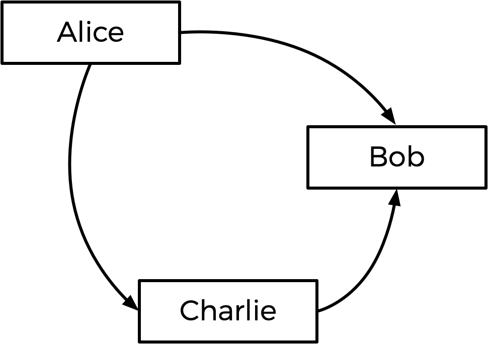
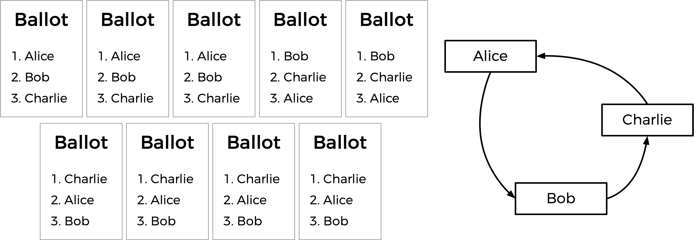
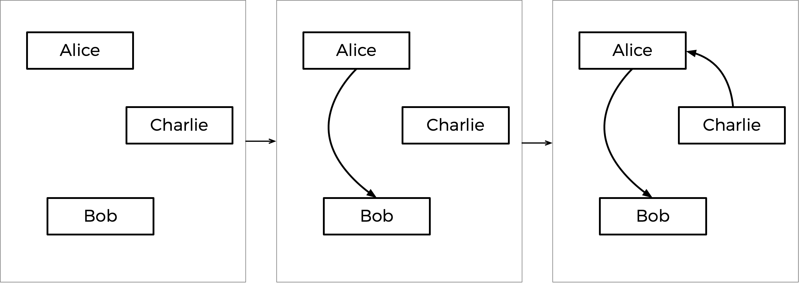

Tideman
要解决的问题
你已经了解多数制选举，它遵循一种非常简单的算法来确定选举的获胜者：每位选民获得一票，得票最多的候选人获胜。
但多数制投票确实有一些缺点。例如，在一场有三名候选人的选举中，如果投出了以下选票，会发生什么？

多数制投票在这里会宣布 Alice 和 Bob 之间平局，因为两人各得两票。但这是正确的结果吗？
还有另一种投票制度，称为排序复选制投票制度。在排序复选制中，选民可以投票给多个候选人。他们不只是投票给他们的首选，还可以按照偏好顺序对候选人进行排序。因此，结果选票可能如下所示。

在这里，每位选民除了指定他们的首选候选人外，还指明了自己的第二和第三选择。现在，原本平局的选举可以确定获胜者了。最初 Alice 和 Bob 之间的竞争是平局，但选择 Charlie 的选民将 Alice 排在 Bob 之前，所以在这里 Alice 可以被宣布为获胜者。
排序复选制投票还可以解决多数制投票的另一个潜在缺点。看看下面的选票。

谁应该赢得这次选举？在每位选民只选择自己首选候选人的多数制投票中，Charlie 以四票赢得选举，而 Bob 仅有三票，Alice 仅有两票。（请注意，如果你熟悉即时排序复选制投票制度，Charlie 在该制度下同样获胜）。然而，Alice 可能会合理地提出她应该成为选举获胜者而不是 Charlie 的论点：毕竟，在九位选民中，大多数（其中五人）更偏好 Alice 而非 Charlie，所以大多数人会更乐意让 Alice 而不是 Charlie 当选。
在这次选举中，Alice 是所谓的”孔多塞获胜者”：即在与任何其他候选人的一对一比拼中都会获胜的人。如果选举只有 Alice 和 Bob，或者只有 Alice 和 Charlie，Alice 都会获胜。
Tideman 投票方法（也称为”排序配对法”）是一种排序复选制投票方法，如果存在孔多塞获胜者，则保证能够产生选举的孔多塞获胜者。在 tideman 文件夹中名为 tideman.c 的文件里，创建一个程序来模拟 Tideman 投票方法的选举。
演示
分发代码
下载分发代码
登录 cs50.dev，点击你的终端窗口，然后单独执行 cd。你应该看到终端窗口的提示符类似于以下内容：
$
接下来执行
wget https://cdn.cs50.net/2026/x/psets/3/tideman.zip
，将名为 tideman.zip 的 ZIP 文件下载到你的 codespace 中。
然后执行
unzip tideman.zip
创建一个名为 tideman 的文件夹。你不再需要这个 ZIP 文件，所以你可以执行
rm tideman.zip
并在提示符后输入 “y” 然后按 Enter 键来删除你下载的 ZIP 文件。
现在输入
cd tideman
然后按 Enter 键进入（即打开）该目录。你的提示符现在应该类似于以下内容。
tideman/ $
如果一切顺利，你应该执行
ls
并看到一个名为 tideman.c 的文件。执行 code tideman.c 应该会打开该文件，你将在这个文件中输入此问题集的代码。如果没有，请回溯你的步骤，看看是否能确定哪里出了问题！
背景
一般来说，Tideman 方法通过构建候选人的”图”来运作，其中从候选人 A 指向候选人 B 的箭头（即边）表示候选人 A 在一对一比拼中击败候选人 B。那么，上述选举的图将如下所示。

从 Alice 到 Bob 的箭头表示更多选民偏好 Alice 而不是 Bob（5 人偏好 Alice，4 人偏好 Bob）。同样，其他箭头表示更多选民偏好 Alice 而不是 Charlie，更多选民偏好 Charlie 而不是 Bob。
观察此图，Tideman 方法表明选举的获胜者应该是图的”源”（即没有任何箭头指向自己的候选人）。在这种情况下，源是 Alice —— Alice 是唯一没有箭头指向她的人，这意味着没有人在一对一比拼中比 Alice 更受偏好。因此 Alice 被宣布为选举的获胜者。
然而，当箭头画出后，有可能没有孔多塞获胜者。考虑下面的选票。

在 Alice 和 Bob 之间，Alice 以 7-2 的优势比 Bob 更受偏好。在 Bob 和 Charlie 之间，Bob 以 5-4 的优势比 Charlie 更受偏好。但在 Charlie 和 Alice 之间，Charlie 以 6-3 的优势比 Alice 更受偏好。如果我们画出图，没有源！我们得到了一个候选人循环，Alice 击败 Bob，Bob 击败 Charlie，Charlie 又击败 Alice（很像石头剪刀布游戏）。在这种情况下，看起来没有办法选出获胜者。
为了处理这种情况，Tideman 算法必须小心避免在候选人图中创建循环。它是如何做到的？算法首先锁定最强的边，因为这些边可以说是最重要的。具体来说，Tideman 算法规定，对决的边应该根据胜利的”强度”（偏好一个候选人超过另一个的人越多，胜利越强）逐个”锁定”到图中。只要边可以被锁定到图中而不创建循环，就添加该边；否则，忽略该边。
这在上述投票中会如何运作？嗯，一对候选人中最大的胜利差距是 Alice 击败 Bob，因为有 7 位选民偏好 Alice 而非 Bob（没有其他一对一比拼有超过 7 位选民偏好的获胜者）。所以 Alice-Bob 箭头首先被锁定到图中。接下来最大的胜利差距是 Charlie 以 6-3 战胜 Alice，所以该箭头被锁定在下一个。
接下来是 Bob 以 5-4 战胜 Charlie。但请注意：如果我们现在添加从 Bob 到 Charlie 的箭头，我们将创建一个循环！由于图不能允许循环，我们应该跳过这条边，根本不将其添加到图中。如果有更多箭头需要考虑，我们会继续看下一个，但这是最后一个箭头，所以图就完成了。
这个逐步过程如下所示，右侧是最终的图。

基于最终的图，Charlie 是源（没有箭头指向 Charlie），因此 Charlie 被宣布为本次选举的获胜者。
更正式地说，Tideman 投票方法由三个部分组成：
- 计票：一旦所有选民都表明了他们的所有偏好，确定每对候选人中谁是更受偏好的候选人以及他们受偏好的优势有多大。
- 排序：按胜利强度的降序对候选人对进行排序，其中胜利强度定义为偏好更受偏好候选人的选民数量。
- 锁定：从最强的一对开始，按顺序遍历候选人对，只要将该对锁定到候选人图中不会在图中创建循环，就将其”锁定”到图中。
一旦图完成，图的源（没有任何边指向它的那个）就是获胜者！
理解
我们来看看 tideman.c。
首先，注意二维数组 preferences。整数 preferences[i][j] 将表示偏好候选人 i 而非候选人 j 的选民数量。
该文件还定义了另一个二维数组，名为 locked，它表示候选人图。locked 是一个布尔数组，因此 locked[i][j] 为 true 表示存在从候选人 i 指向候选人 j 的边；false 表示没有边。（如果好奇的话，这种图的表示方式被称为”邻接矩阵”）。
接下来是一个名为 pair 的 struct，用于表示一对候选人：每一对包含 winner 的候选人索引和 loser 的候选人索引。
候选人本身存储在数组 candidates 中，这是一个 string 数组，表示每位候选人的姓名。还有一个 pairs 数组，将代表选举中所有的候选人对（其中一位比另一位更受偏好）。
该程序还有两个全局变量：pair_count 和 candidate_count，分别表示 pairs 数组中的候选人对数量和 candidates 数组中的候选人数量。
现在来看 main。请注意，在确定候选人数量后，程序遍历 locked 图并将所有值初始化为 false，这意味着我们初始的图中没有任何边。
接下来，程序遍历所有选民，通过调用 vote 将他们偏好的候选人收集到名为 ranks 的数组中，其中 ranks[i] 是选民的 i 号偏好候选人的索引。这些排名被传入 record_preference 函数，该函数的工作是接收这些排名并更新全局 preferences 变量。
一旦所有投票都完成，通过调用 add_pairs 将候选人对添加到 pairs 数组中，通过调用 sort_pairs 进行排序，并通过调用 lock_pairs 锁定到图中。最后，调用 print_winner 打印出选举获胜者的姓名！
再往下看，你会发现 vote、record_preference、add_pairs、sort_pairs、lock_pairs 和 print_winner 函数都是空的。这些就交给你了！
规格说明
完成 tideman.c 的实现，使其模拟 Tideman 选举。
- 完成
vote函数。- 该函数接受参数
rank、name和ranks。如果name与某位有效候选人的姓名匹配，那么你应该更新ranks数组，以表明该选民将该候选人作为其第rank偏好（其中0是第一偏好，1是第二偏好，以此类推）。 - 回想一下，
ranks[i]在这里表示用户的第i偏好。 - 如果排名成功记录，该函数应返回
true，否则返回false（例如，如果name不是其中一位候选人的姓名）。 - 你可以假设没有两位候选人会有相同的姓名。
- 该函数接受参数
- 完成
record_preferences函数。- 该函数对每位选民调用一次，接受
ranks数组作为参数（回想一下，ranks[i]是选民的第i偏好，其中ranks[0]是第一偏好）。 - 该函数应更新全局
preferences数组以添加当前选民的偏好。回想一下，preferences[i][j]应表示偏好候选人i而非候选人j的选民数量。 - 你可以假设每位选民都会给每位候选人排序。
- 该函数对每位选民调用一次，接受
- 完成
add_pairs函数。- 该函数应将所有一位候选人比另一位更受偏好的候选人对添加到
pairs数组中。平局的候选人对（双方都没有比另一方更受偏好）不应添加到数组中。 - 该函数应更新全局变量
pair_count，使其等于候选人对的数量。（因此，所有候选人对都应存储在pairs[0]到pairs[pair_count - 1]（含）之间）。
- 该函数应将所有一位候选人比另一位更受偏好的候选人对添加到
- 完成
sort_pairs函数。- 该函数应按胜利强度的降序对
pairs数组进行排序，其中胜利强度定义为偏好更受偏好候选人的选民数量。如果多个候选人对具有相同的胜利强度，你可以假设顺序无关紧要。
- 该函数应按胜利强度的降序对
- 完成
lock_pairs函数。- 该函数应创建
locked图，只要边不会创建循环，就按胜利强度的降序添加所有边。
- 该函数应创建
- 完成
print_winner函数。- 该函数应打印出作为图源的候选人的姓名。你可以假设不会有多于一个源。
除了 vote、record_preferences、add_pairs、sort_pairs、lock_pairs 和 print_winner 函数的实现（以及如果你愿意，可以包含额外的头文件）之外，你不应该修改 tideman.c 中的任何其他内容。你被允许向 tideman.c 添加额外的函数，只要你不更改任何现有函数的声明。
讲解视频
如何测试
请务必测试你的代码，确保它能处理…
- 任意数量候选人的选举（最多
MAX即9人） - 按姓名投票给候选人
- 对不在选票上的候选人的无效投票
- 打印选举获胜者
正确性
check50 cs50/problems/2026/x/tideman
代码风格
style50 tideman.c
如何提交
在终端中执行以下命令提交你的作业，并按提示完成操作。
submit50 cs50/problems/2026/x/tideman